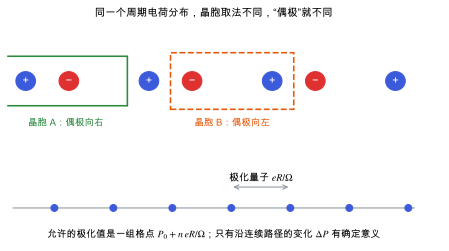

极化与 Berry 相
周期体系里极化为什么不能直接由电荷分布求出，现代极化理论和极化量子怎样解决这个问题。
直观阅读需要
- 电偶极矩 p = Σ q r
- 周期边界条件
完整推导还需要
- 倒空间、布里渊区与 k 点采样 与 Bloch 定理
- 平面波基组与截断能
只是提示，不需要先读完才能往下看。
直觉直观解释
有限分子的偶极矩很清楚：p = \sum_i q_i\,r_i。到了无限周期晶体里，“晶胞的偶极矩除以体积”这个想法不再成立：同一个周期电荷分布，晶胞框选的位置不同，算出的偶极就不同，甚至方向相反 [Resta 1994]。电子密度是连续分布的，同样没有唯一的切法。
现代极化理论给出的解决办法是：
- 不问“极化是多少”，而问极化变化了多少。极化变化等于变化过程中流过晶体的电流对时间的积分，这是可测量的。
- 电子部分的这个变化可以写成波函数在布里渊区上的 Berry 相，只用一个状态的波函数就能算 [King-Smith & Vanderbilt 1993]。
- 代价是单个状态的极化只确定到一个极化量子的整数倍：P 是一组等间隔的值，而不是一个数。

| 符号 | 是什么 | 图里对应 |
|---|---|---|
| +、- | 周期排列的正、负电荷 | 上图蓝、红圆点 |
| 晶胞 A、B | 两种同样合法的晶胞取法 | 绿色实框、橙色虚框 |
| R | 晶格矢量（一维时就是晶格常数） | 下图相邻格点的间距对应 eR/\Omega |
| \Omega | 晶胞体积 | 极化量子的分母 |
| P_0 | 多值集合中任取的一个代表值 | 下图任一蓝点 |
| n | 任意整数，标记分支 | 下图不同蓝点 |
定义与公式数学与推导
总极化再加上离子（原子核加芯电子）的点电荷贡献：
其中 Z^{\mathrm{ion}}_{\kappa} 是原子 \kappa 的价离子电荷（赝势或 PAW 中的价电子数），\mathbf{r}_{\kappa} 是它的位置。
两个结构之间的物理极化差，是沿一条使带隙始终不闭合的连续路径，把每一步的变化接起来得到的值。实际做法是：在路径上取足够密的中间结构，使相邻两点的变化远小于极化量子，然后选择让曲线连续的分支。
在本研究线里的样子对应与边界
- 为什么压电要用它：压电系数 e = \partial P/\partial \eta 就是极化的变化。用有限差分算 e 时，要在几个应变下各算一次 Berry 相极化，再求差分。
- VASP：
LCALCPOL = .TRUE.用 Berry 相方法输出电子与离子偶极 [VASP Wiki: LCALCPOL]。LEPSILON的微扰方法不直接算 P，而是算它对扰动的导数，所以没有分支问题，见 有限差分与微扰方法。 - β-甘氨酸是极性晶体：点群 2 允许自发极化，所以零应变时 P 本身就可能不为零。压电只关心它对应变的导数，但这会引出 压电张量 里提到的 proper 与 improper 压电张量的区别。
常见坑对应与边界
- 分支跳变：两个应变点的极化差接近极化量子时，直接相减会差一个量子。先把差值与极化量子比较，再决定是否加减整数个量子。
- k 点方向：Berry 相沿某个倒格矢方向的 k 点串计算。这个方向的 k 点太少，结果不收敛。
- 把单个 P 当作物理量：单个结构“极化是多少”在没有指定参考结构时没有意义。报告时要说明参考结构，或只报告差值。
- 带隙要保持打开：路径上某个结构如果变成金属，极化不再有定义，差值也失去意义。
检验自己对应与边界
参考资料
论文Resta 1994
尚未实际查阅，目前只是拟查阅书目
论文King-Smith & Vanderbilt 1993
尚未实际查阅，目前只是拟查阅书目
教材Vanderbilt 2018
D. Vanderbilt, Berry Phases in Electronic Structure Theory, Cambridge University Press (2018)
尚未实际查阅，目前只是拟查阅书目
官方文档VASP Wiki: LCALCPOL
VASP Wiki, LCALCPOL（Berry 相方法计算宏观极化）
尚未实际查阅，目前只是拟查阅书目
分类响应与张量性质 · 概念 · 研究线：压电与响应计算 · 状态：草稿